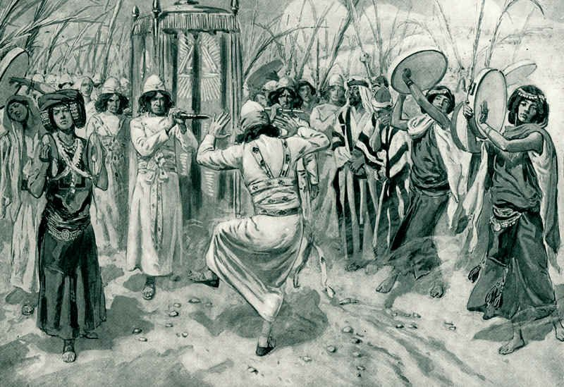

Salmos 24 — La Traducción Mister

Salmo 24:7–10. Es la imagen de Tissot de 2 Samuel 6:14, el arca subiendo con la danza de David, puesta aquí porque lectores posteriores han oído el alzarse de las puertas en esa procesión. El salmo mismo no nombra ninguna ocasión, ningún arca ni ninguna danza; pregunta quién puede subir al monte y quién es el Rey de la gloria.

Notas del traductor — versículo por versículo
⭐ De Jehová la tierra. «De Jehová la tierra y su plenitud» está en este único versículo, con «de Jehová» puesto primero. El encabezado, ledavid mizmor, «de David, salmo» (mizmor), es parte del versículo 1 en el hebreo y no se numera aparte. «El mundo y los que habitan en él» está en dos versículos, este y el Salmo 98:7; el mundo es tevel. Pablo cita el versículo en 1 Corintios 10:26 (ya en estas páginas), y la afirmación se hace con otras palabras en Éxodo 9:29, Éxodo 19:5 y Deuteronomio 10:14 (todos ya en estas páginas). La RV60 dice «De Jehová es la tierra y su plenitud; El mundo, y los que en él habitan», la NVI «Del Señor es la tierra y todo cuanto hay en ella, el mundo y cuantos lo habitan», la TNM 1987 «A Jehová pertenecen la tierra y lo que la llena, la tierra productiva y los que moran en ella» y la TNM 2019 «De Jehová es la tierra y todo lo que hay en ella».
⭐ Sobre mares y sobre ríos. «Sobre mares la fundó» está en este único versículo, y «y sobre ríos la establece» está en este único versículo, siendo el verbo kun, afirmar; las aguas de Génesis 1:9 (ya en estas páginas) son el cimiento. La RV60 dice «Porque él la fundó sobre los mares, Y la afirmó sobre los ríos», la NVI «porque él afirmó la tierra sobre los mares, la estableció sobre los ríos» y la TNM 1987 «sobre los mares él mismo la ha fijado sólidamente, y sobre los ríos la mantiene firmemente establecida».
⭐ ¿Quién subirá? «¿Quién subirá al monte de Jehová?» está en este único versículo, y «¿y quién estará en su lugar santo?» está en este único versículo. Es la pregunta que se hace en una puerta, y la puerta de Jehová del Salmo 118:19–20 y las puertas de Isaías 26:2 (ambos ya en estas páginas) preguntan quién puede entrar. La RV60 dice «¿Quién subirá al monte de Jehová? ¿Y quién estará en su lugar santo?», la NVI «¿Quién puede subir al monte del Señor? ¿Quién puede estar en su Lugar Santo?» y la TNM 1987 «¿Quién puede ascender a la montaña de Jehová, y quién puede levantarse en su lugar santo?».
⭐ Manos limpias, corazón puro. «Limpio de manos» (naqi kappayim) está en este único versículo, y «y puro de corazón» está en este único versículo. El par se recoge en el griego de Mateo 5:8, «los de limpio corazón», y en Santiago 4:8, «limpien las manos… purifiquen el corazón» (ambos ya en estas páginas). La RV60 dice «El limpio de manos y puro de corazón», la NVI «Solo el de manos limpias y corazón puro», la TNM 1987 «El inocente de manos y limpio de corazón» y la TNM 2019 «El de manos inocentes y corazón puro».
⚠ «Mi alma». «Que no ha elevado mi alma a lo falso» está en este único versículo: el hebreo impreso del que traducimos tiene nafshi, «mi alma», y la RV60 lee «su alma». La TNM 1987 lo guarda, «que no haya llevado Mi alma a pura indignidad»; la RV60 dice «El que no ha elevado su alma a cosas vanas», la NVI «el que no adora ídolos vanos ni jura por dioses falsos» y la TNM 2019 «que no ha jurado por mi vida en falso», que lo interpretan. Esta traducción guarda «mi alma» porque es lo que está escrito, y lo dice. «Ni jurado para engañar» está en este único versículo (mirmah); la RV60 dice «Ni jurado con engaño» y la TNM 1987 «ni prestado juramento engañosamente».
⭐ Bendición y justicia. «Él llevará bendición de Jehová» está en este único versículo, y la justicia viene «del Dios de su salvación», que está en este único versículo (berakhah, yasha). La RV60 dice «Él recibirá bendición de Jehová, Y justicia del Dios de salvación», la NVI «Quien es así recibe bendiciones del Señor; el Dios de su salvación le hará justicia», la TNM 1987 «Él se llevará bendición de parte de Jehová, y justicia de su Dios de salvación» y la TNM 2019 «Él recibirá bendiciones de Jehová».
⭐ La generación, y «Jacob». «La generación de los que lo buscan» está en este único versículo (darash), y «los que buscan tu rostro» está en este único versículo (panim). ⚠ El hebreo termina entonces con «Jacob» y nada más, y las versiones lo remiendan: la RV60 dice «oh Dios de Jacob», la NVI «oh Dios de Jacob», la TNM 1987 «oh Dios de Jacob» y la TNM 2019 «oh, Dios de Jacob». Esta traducción guarda el «Jacob» solo, ya sea el pueblo al que se habla o el Dios de Jacob sin nombrar. El primer Selah del salmo está aquí.
⭐ Alzad, puertas, vuestras cabezas. «Alzad, puertas, vuestras cabezas» está en dos versículos, los versículos 7 y 9, y «puertas de antaño» está en dos versículos, los mismos dos, siendo las puertas (puertas, petach) las de olam, tiempo duradero. El salmo no nombra ninguna ocasión; lectores posteriores han oído en él la subida del arca (2 Samuel 6:12–15, ya en estas páginas), y eso es una lectura y no algo que digan los versículos. La RV60 dice «Alzad, oh puertas, vuestras cabezas, Y alzaos vosotras, puertas eternas», la NVI «Eleven, puertas, sus dinteles; levántense, puertas antiguas» y la TNM 1987 «Alcen sus cabezas, oh puertas, y álcense ustedes mismas, oh entradas de larga duración».
⭐ El Rey de la gloria. «El Rey de la gloria» está en cuatro versículos, y los cuatro están en este salmo, los versículos 7, 8, 9 y 10 (melekh, kavod); el hebreo pone el artículo a la gloria, «el Rey de la gloria», que la TNM 1987 traduce «el glorioso Rey». «¿Quién es este Rey de la gloria?» está en este único versículo, y la respuesta es «fuerte y poderoso», que está en este único versículo (izuz), «Jehová, poderoso en batalla», que está en este único versículo. La RV60 dice «Jehová el fuerte y valiente, Jehová el poderoso en batalla», la NVI «El Señor, el fuerte y valiente, el Señor, el valiente en la batalla» y la TNM 1987 «Jehová fuerte y poderoso, Jehová poderoso en batalla».
⭐ Jehová de los ejércitos. La segunda pregunta tiene un hebreo distinto, mi hu zeh, «¿quién es él, este?», y la respuesta es Jehová de los ejércitos: «él es el Rey de la gloria» está en este único versículo. La RV60 dice «Jehová de los ejércitos, Él es el Rey de la gloria», la NVI «Es el Señor de los Ejércitos; ¡él es el Rey de la gloria!» y la TNM 1987 «Jehová de los ejércitos... él es el glorioso Rey». El segundo Selah cierra el salmo.
Patrones que vale la pena llevar adelante
Donde esta traducción mantiene las palabras exactas y distintas: «el mundo» para tevel; «establece» para kun; «limpio de manos» para naqi kappayim y «puro de corazón» para bar levav; «mi alma» para nafshi en el versículo 4, como está escrito; «bendición» para berakhah y «justicia» para tsedaqah; «puertas de antaño» para pithei olam; «el Rey de la gloria» para melekh hakavod en los cuatro versículos; «Jehová de los ejércitos» para YHWH tsevaot; «Jehová» para el Nombre, escrito en los versículos 1, 3, 5, 8 y 10.
Ecos pagados. 1 Corintios 10:26; Éxodo 9:29 y 19:5; Deuteronomio 10:14; Génesis 1:9; Salmo 118:19–20; Isaías 26:2; Mateo 5:8 y Santiago 4:8; 2 Samuel 6:12–15.
Ecos plantados. Salmo 98:7 (el otro «el mundo y los que habitan en él»). Todavía no está en estas páginas.
⚠ Una nota sobre el orden: los Salmos están en estas páginas en los capítulos 1, 2, 8, 18, 19, 22, 23, 24, 25, 27, 32, 34, 37, 40, 42, 46, 51, 56, 62, 63, 90, 91, 100, 103, 118, 119, 121, 130, 138, 139, 145 y 150, elegidos por la frecuencia con que se lee un pasaje y no en secuencia. El hilo secuencial no cambia: el siguiente en la secuencia es el Salmo 3.